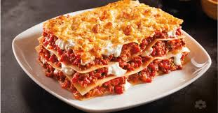

Lasagna

Description
Lasagna is a classic Italian baked casserole dish made by stacking wide,
flat pasta sheets alternating with layers of rich sauces,
cheeses, and seasonings. When baked, the ingredients meld together into a hearty,
comforting meal featuring a golden, bubbling, and crispy cheese topping.
The word "lasagna" refers to both the individual flat noodle sheets and the finished,
layered dish itself.
Ingredients
- A rich meat sauce
- A creamy cheese filling
- Tender pasta sheets
Steps
- Prep Sauce: Brown 1 lb ground beef, add onion and garlic, then simmer with tomato sauce and herbs.
- Prep Cheese: Mix 15 oz ricotta cheese with 1 egg and ½ cup Parmesan cheese.
- Assemble Sauce: Spread a thin layer on the bottom of a 9x13 dish.
- Assemble Layers: Repeat layers of noodles, ricotta mix, meat sauce, and mozzarella cheese.
- Assemble Top: End with noodles, remaining sauce, and a heavy layer of mozzarella and Parmesan.
- Bake Covered: Bake at 375°F (190°C) with aluminum foil for 30–45 minutes.
- Bake Uncovered: Remove foil and bake 10-15 minutes until bubbly.
- Bake Rest: Cool for 15 minutes before cutting.
Home